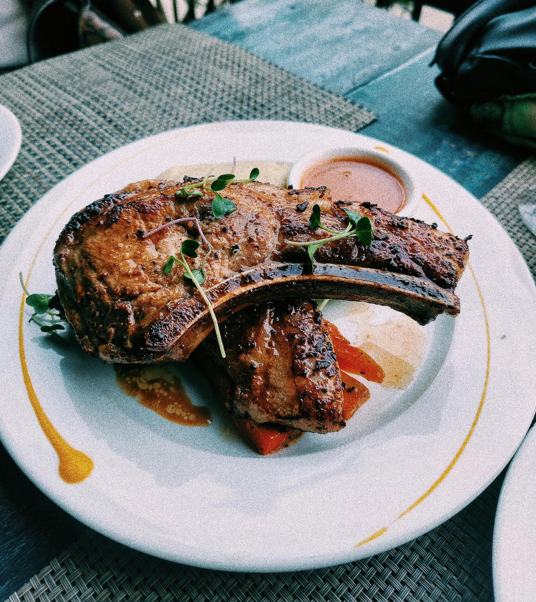

Momma's Finger Licking Pork Chops

Description
These bone-in pork chops are seared to perfection and basted in a rich garlic-herb butter. This method ensures the meat stays juicy on the inside while developing a golden, flavorful crust on the outside.
It is a quick, restaurant-quality meal that takes less than 20 minutes from start to finish. The addition of fresh rosemary and thyme infuses the butter, creating a simple pan sauce that elevates the pork to something truly special.
Ingredients
- 4 Bone-in center-cut pork chops (approx. 1-inch thick)
- 2 tsp Kosher salt
- 1 tsp Coarsely ground black pepper
- 3 tbsp Unsalted butter
- 4 cloves Garlic, smashed and peeled
- 3 sprigs Fresh rosemary
- 5 sprigs Fresh thyme
- 2 tbsp Extra virgin olive oil
- 1/2 tsp Smoked paprika (optional, for color)
Steps to Complete the Dish
- Remove pork chops from the refrigerator 20 minutes before cooking to bring them to room temperature.
- Pat the pork chops completely dry with paper towels; moisture is the enemy of a good sear.
- Season both sides generously with salt, pepper, and a dusting of smoked paprika.
- Heat olive oil in a heavy cast-iron skillet over medium-high heat until the oil begins to shimmer and smoke slightly.
- Place the chops in the pan and sear for 3–5 minutes without moving them, until a deep golden-brown crust forms.
- Flip the chops and immediately add the butter, smashed garlic, and herb sprigs to the center of the pan.
- Tilt the pan slightly so the melting butter pools with the herbs and garlic; use a large spoon to continuously pour this hot butter over the chops for the final 3 minutes of cooking.
- Remove the chops when the internal temperature reaches 145°F and let them rest on a warm plate for 5 minutes before serving.
Home